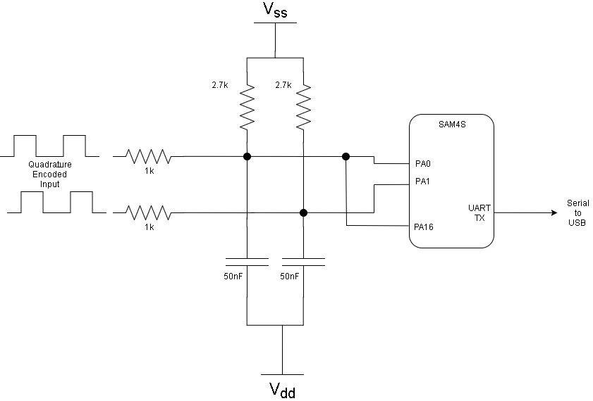
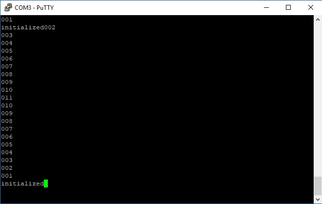
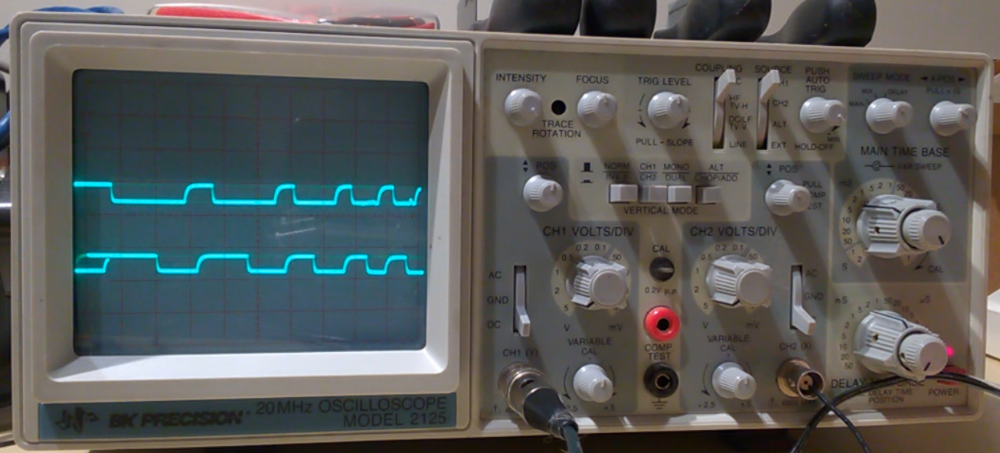

Note: The Quadrature Decoder is meant for measuring a speed sensor that gives a quadrature encoded output. I don't think it's meant for this rotary encoder that I chose. It works, but looking back, I think using two regular inputs with one being an interrupt would have been better. The quadrature decoder on the SAM4S has glitch filtering, which is great. Before I added a low pass filter to the input to filter the mechanical noise from the rotary encoder, the peripheral was catching the noise and throwing an error - which is good. I was able to get an interrupt on a direction change of the rotary encoder, but I couldn't trigger an interrupt on every pulse. I ended up tying the IDX input to one of the signals to generate an interrupt on every pulse. The index is supposed to be a once per revolution type input. This is not how it's supposed to be designed, but it works. I also found that a register that was supposed to count the pulses remained at zero. In the end, I didn't need to know the count, but it would have been nice to know.
The quadrature decoder is part of the Timer/Counter. A quadrature signal is made up of two signals that are offset by 90 degrees. This type of signal can be used to measure the speed and direction of something turning, such as a quadrature encoder. For more information, read this National Instruments white paper.
This tutorial will show you how to connect and read a rotary switch with quadrature output. This encoder gives 20 ppr (pulses per revolution) and it also has a push switch.
For this example, I just want to know if it is turning and which way it is turning with this information we could drive a digital potentiometer from the SAM4S.
Here is a simplified schematic of the setup. I've ommited the UART and parts on the PCB for simplicity. The 1k resistors and capacitors form a low pass filter with cutoff somewhere around 3Hz. The 2.7k reistors are pull up resistors. When the knob is turned, the signals are shorted to ground briefly and pulled back up (with a 90 degree offset between each signal).
Uploading the code below will output a pulse counter. Clockwise counts up, counterclockwise counts down. As you can see from the picture below, I turned the knob one way and then the other. Since there is no code in the while loop and nothing to poke the watchdog, there is a watchdog reset at the end.
Here is an image of the signal on my oscilloscope. I would have liked to make the wave form a little sharper, but I don't have a large selection of passives to create the filter. I wish I had a digital oscilloscope
Set QDEN bit in TC_BMR register to enable quadrature filter, edge detection, and decoding ensure QDTRANS bit is 0 for full quadrature decoding logic We won't be measuring speed of rotation or position so SPEEDEN and POSEN bits will remain 0 We only want to get an interrupt on one of the signal pulses, so EDGEPHA bit will remain 0 enable interrupts - set IDX and DIRCHG to 1 in the TC_QIER register to enable interrupts on rising edge on the IDX input and direction change The status of the interrupts can be read in the TC_QISR register (IDX and DIR bits).
This example waits for an interrupt from the rotary encoder, updates two variables - rotation direction and counts up or down, and then outputs the count to UART
#include "sam.h" #include "basic_uart.h" #define CLOCKWISE 1 #define COUNTERCLOCKWISE -1 //These variables are marked volatile because they will be altered during interrupt service routines //direction of rotary encoder volatile signed int direction = 1; //counter for rotary encoder volatile uint8_t pulseCounter = 0; void clock_init(){ REG_CKGR_MOR |= CKGR_MOR_KEY_PASSWD | CKGR_MOR_MOSCXTEN| CKGR_MOR_MOSCXTST(255);; //enable external crystal, set settle wait time while (!(REG_PMC_SR & PMC_SR_MOSCXTS)); //wait for crystal to become ready REG_CKGR_MOR |= CKGR_MOR_KEY_PASSWD | CKGR_MOR_MOSCSEL; //select crystal REG_PMC_MCKR |= PMC_MCKR_CSS_MAIN_CLK; //master clock source selection - choose main clock while (!(REG_PMC_SR & PMC_SR_MCKRDY)); //wait until main clock ready REG_PMC_MCKR |= PMC_MCKR_PRES_CLK_1; //select processer prescaler (0 - no divisor) while (!(REG_PMC_SR & PMC_SR_MCKRDY)); //wait until main clock ready } void QDEC_init(){ //Setup for TC0 - ID 23, TIOA0 - PA0 peripheral B //enable interrupts in NVIC for TC0 NVIC_EnableIRQ(TC0_IRQn); //enable peripheral clock for timer counter channel0 REG_PMC_PCER0 |= PMC_PCER0_PID23; //XC0 input (datasheets says this is a must, but doesn't say why) //This selects XC0 as the clock REG_TC0_CMR0 |= TC_CMR_TCCLKS(TC_CMR_TCCLKS_XC0); //enable QDEC REG_TC0_BMR |= TC_BMR_QDEN; REG_TC0_BMR |= TC_BMR_EDGPHA; REG_TC0_BMR |= TC_BMR_POSEN; //For Position and Rotation Measurement (not Speed Measurement) REG_TC0_CMR0 |= TC_CMR_ETRGEDG(TC_CMR_ETRGEDG_RISING); REG_TC0_CMR0 |= TC_CMR_ABETRG; REG_TC0_CMR1 |= TC_CMR_ETRGEDG(TC_CMR_ETRGEDG_RISING); REG_TC0_CMR1 |= TC_CMR_ABETRG; /*on page 52 of the datasheet: 11.2.1 PIO Controller A Multiplexing PA0 and PA1 are used for TIOA0 and TIOB0 and they are in peripheral 'B' */ //take control of pin PA0 and pin PA1 from PIO and give to peripheral REG_PIOA_PDR |= PIO_PDR_P0; REG_PIOA_PDR |= PIO_PDR_P1; REG_PIOA_PDR |= PIO_PDR_P16; //assign control of pin to peripheral 'B' REG_PIOA_ABCDSR |= PIO_ABCDSR_P0; REG_PIOA_ABCDSR |= PIO_ABCDSR_P1; REG_PIOA_ABCDSR |= PIO_ABCDSR_P16; /* Note about PIOA_ABCDSR: This register is the peripheral A, B, C, D Select register. Each pin has multiple peripherals that can be assigned to the pin (page 52 of the datasheet: 11.2.1 PIO Controller A Multiplexing) The datasheet shows two registers - one for AB and the other for CD named ABCDSR1 and ABCDSR2. After compiling this code and looking in the dependency file pio.h from the solution explorer found on the right hand side of Atmel studio, we can see that it only has ABCDSR. I'm not sure why it's different. To select the C and D peripheral for the pin, a new definition will need to be created pointing to the correct memory address. Looking at pio.h we see the folloing definitions #define REG_PIOA_PUSR (*(__I uint32_t*)0x400E0E68U) < \brief (PIOA) Pad Pull-up Status Register #define REG_PIOA_ABCDSR (*(__IO uint32_t*)0x400E0E70U) < \brief (PIOA) Peripheral Select Register #define REG_PIOA_IFSCDR (*(__O uint32_t*)0x400E0E80U) < \brief (PIOA) Input Filter Slow Clock Disable Register I think they are missing this: #define REG_PIOA_ABCDSR2 (*(__IO uint32_t*)0x400E0E78U) < \brief (PIOA) Peripheral Select Register CD This needs to be tested, but that's for another day */ //enable interrupts on IDX pins and direction change REG_TC0_QIER |= TC_QIER_IDX | TC_QIER_DIRCHG; } int main(void) { /* Initialize the SAM system */ SystemInit(); clock_init(); UART_Init(); QDEC_init(); printString("initialized") ; /* Replace with your application code */ while (1) { } } void TC0_Handler(void){ //read status register - this clears interrupt flags uint32_t status = REG_TC0_QISR; //change in direction if ((status & TC_QISR_DIRCHG)==TC_QISR_DIRCHG){ //interrupt source is a direction change if (((status & TC_QISR_DIR)>>8) == 1){ direction = CLOCKWISE; } else if (((status & TC_QISR_DIR)>>8) == 0){ direction = COUNTERCLOCKWISE; } } //pulse if ((status & TC_QISR_IDX)==TC_QISR_IDX){ //interrupt source is pulse on IDX pin if ((direction == CLOCKWISE) ){ pulseCounter += direction; printByte(pulseCounter); printString("\r\n") ; } if ((direction == COUNTERCLOCKWISE)){ pulseCounter += direction; printByte(pulseCounter); printString("\r\n"); } } }